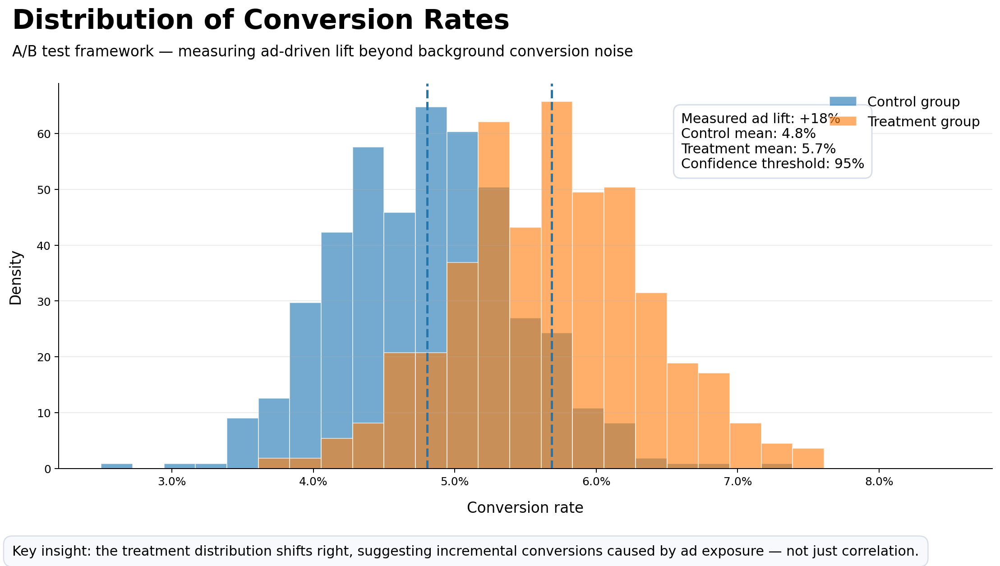

A comprehensive analysis of operational and financial data from a service company in the utilities / technical services industry. The objective: move beyond reporting into decision intelligence — surface inefficiencies, financial risk and profitability drivers, and propose a scalable data-quality framework. All company-specific information has been fully anonymised.
The company had years of operational and financial data spread across Excel files, but no integrated view. Leadership could see what was happening — revenue, costs, projects — but not why some locations were dramatically more profitable than others, or how dependent the business really was on a small group of clients.
The brief: build an analytical system that goes beyond reporting and supports actual decision-making, and propose a data-quality layer that makes the system trustworthy over time.

Once the data-quality system is in place, the same dashboards unlock predictive profitability models, automated KPI-deviation alerts, real-time validated reporting, customer lifecycle segmentation, and automated anomaly detection — turning a static report into a living decision system.
This project demonstrates end-to-end thinking: data → insight → strategy. It integrates engineering, analytics and business logic with a strong focus on decision-making, not just reporting — while being honest about data limitations and scalability challenges.